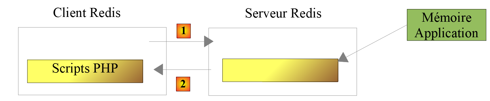
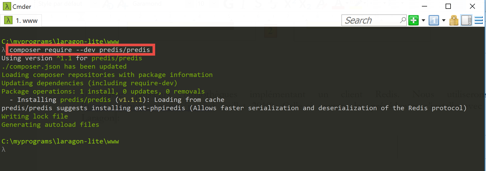

20. Exercice d’application – version 10
La version précédente a montré que les données fiscales, partagées par tous les utilisateurs de l’application, devraient être stockées dans une mémoire de portée [Application]. Nous allons utiliser un serveur Redis [https://redis.io] pour implémenter celle-ci.
20.1. Redis
La mémoire de portée [Application] sera implémentée par un serveur Redis. Les scripts PHP ayant besoin de cette mémoire d’application seront des clients de ce serveur :

20.2. Installation de Redis
Laragon vient avec un serveur Redis non activé par défaut. Il faut donc commencer par l’activer :

-
en [3], activer le serveur [Redis] ;
-
en [4], laisser le port [6379] que les clients Redis utilisent par défaut ;
Les services Laragon sont automatiquement relancés après activation de Redis :

20.3. Le client Redis en mode commande
Le serveur Redis peut être interrogé en mode commande. On ouvre un terminal Laragon (cf paragraphe lien) :

- en [1], la commande [redis-cli] lance le client en mode commande du serveur Redis ;
En juillet 2019, le client Redis peut utiliser 172 commandes pour dialoguer avec le serveur [https://redis.io/commands#list]. L’une d’elles [command count] [2], affiche ce nombre [3].
Nous n’allons présenter que celles dont nous allons avoir besoin dans notre application PHP. Nous allons utiliser Redis pour une unique chose : stocker un tableau [‘attribut’=>’valeur’] dans la mémoire de Redis. Cela se fait avec la commande Redis [set attribut valeur] [4]. La valeur peut ensuite être récupérée avec la commande [get attribut] [5]. C’est tout ce dont nous aurons besoin.
Il peut être nécessaire de vider la mémoire de Redis. Cela se fait avec la commande [flushdb] [6]. Ensuite si on demande la valeur de l’attribut [titre] [7], on obtient une référence [nil] [8] indiquant que l’attribut n’a pas été trouvé. On peut également utiliser la commande [exists] [9-10] pour vérifier l’existence d’un attribut.
Pour quitter le client Redis, taper la commande [quit] [11].
20.4. Installation d’un client Redis pour PHP
Il nous faut maintenant installer un client Redis pour PHP :

Il existe plusieurs bibliothèques implémentant un client Redis. Nous utiliserons la bibliothèque [Predis] [https://github.com/nrk/predis] (juillet 2019). Celle-ci comme les précédentes s’installe avec [composer] dans un terminal Laragon :

20.5. Code du serveur

Le fichier de configuration [config-server.json] évolue de la façon suivante :
| {
"rootDirectory": "C:/myprograms/laragon-lite/www/php7/scripts-web/impots/version-10",
"databaseFilename": "Data/database.json",
"relativeDependencies": [
"/../version-08/Entities/BaseEntity.php",
"/../version-08/Entities/ExceptionImpots.php",
"/../version-08/Entities/TaxAdminData.php",
"/../version-08/Entities/Database.php",
"/../version-08/Dao/InterfaceServerDao.php",
"/../version-08/Dao/ServerDao.php",
"/../version-09/Dao/ServerDaoWithSession.php",
"/../version-08/Métier/InterfaceServerMetier.php",
"/../version-08/Métier/ServerMetier.php",
"/../version-09/Utilities/Logger.php",
"/../version-09/Utilities/SendAdminMail.php"
],
"absoluteDependencies": [
"C:/myprograms/laragon-lite/www/vendor/autoload.php",
"C:/myprograms/laragon-lite/www/vendor/predis/predis/autoload.php"
],
"users": [
{
"login": "admin",
"passwd": "admin"
}
],
"adminMail": {
"smtp-server": "localhost",
"smtp-port": "25",
"from": "guest@localhost",
"to": "guest@localhost",
"subject": "plantage du serveur de calcul d'impôts",
"tls": "FALSE",
"attachments": []
},
"logsFilename": "Data/logs.txt"
}
|
Commentaires
-
lignes 5-15 : la version 10 n’amène rien de nouveau en dehors du script [impots-server.php]. Elle utilise des éléments des verions 08 et 09 ;
-
ligne 19 : une dépendance nécessaire à la bibliothèque [predis] que l’on vient d’installer ;
Le code du serveur [impots-server.php] évolue de la façon suivante :
| <?php
// respect strict des types déclarés des paramètres de foctions
declare (strict_types=1);
// espace de noms
namespace Application;
// gestion des erreurs par PHP
ini_set("display_errors", "0");
//
// chemin du fichier de configuration
define("CONFIG_FILENAME", "Data/config-server.json");
// alias de classe
use \Application\ServerDaoWithSession as ServerDaoWithRedis;
// session
$session = new Session();
$session->start();
…
…
// 1er log
$logger->write("\n---nouvelle requête\n");
// on récupère la requête courante
$request = Request::createFromGlobals();
// authentification seulement la 1re fois
if (!$session->has("user")) {
…
} else {
// log
$logger->write("Authentification prise en session…\n");
}
// on a un utilisateur valide - on vérifie les paramètres reçus
$erreurs = [];
// on doit avoir trois paramètres GET
$method = strtolower($request->getMethod());
…
// erreurs ?
if ($erreurs) {
// on envoie un code d'erreur 400 HTTP_BAD_REQUEST au client
sendResponse($response, ["erreurs" => $erreurs], Response::HTTP_BAD_REQUEST, [], $logger);
// terminé
exit;
} else {
// logs
$logger->write("paramètres ['marié'=>$marié, 'enfants'=>$enfants, 'salaire'=>$salaire] valides\n");
}
// on a tout ce qu'il faut pour travailler
// Redis
\Predis\Autoloader::register();
try {
// client [predis]
$redis = new \Predis\Client();
// on se connecte au serveur pour voir s'il est là
$redis->connect();
} catch (\Predis\Connection\ConnectionException $ex) {
// internal server error
doInternalServerError("[redis], " . utf8_encode($ex->getMessage()), $response, $config['adminMail'], $logger);
// terminé
exit;
}
// création de la couche [dao]
if (!$redis->get("taxAdminData")) {
// les données fiscales sont prises dans la base de données
$logger->write("données fiscales prises en base de données\n");
try {
// construction de la couche [dao]
$dao = new ServerDaoWithRedis($config["databaseFilename"], NULL);
// on met les données fiscales dans la mémoire de portée [application]
// la méthode [TaxAdminData]->__toString va être appelée implicitement
$redis->set("taxAdminData", $dao->getTaxAdminData());
} catch (\RuntimeException $ex) {
// on note l'erreur
doInternalServerError("[dao], " . utf8_encode($ex->getMessage()), $response, $config['adminMail'], $logger, $redis);
// terminé
exit;
}
} else {
// les données fiscales sont prises dans la mémoire de portée [application]
$arrayOfAttributes = \json_decode($redis->get("taxAdminData"), true);
$taxAdminData = (new TaxAdminData())->setFromArrayOfAttributes($arrayOfAttributes);
// isntanciation de la couche [dao]
$dao = new ServerDaoWithRedis(NULL, $taxAdminData);
// logs
$logger->write("données fiscales prises dans redis\n");
}
// création de la couche [métier]
$métier = new ServerMetier($dao);
// calcul de l'impôt
$result = $métier->calculerImpot($marié, (int) $enfants, (int) $salaire);
// on rend la réponse
sendResponse($response, $result, Response::HTTP_OK, [], $logger, $redis);
// fin
exit;
function doInternalServerError(string $message, Response $response, array $infos,
Logger $logger = NULL, \Predis\Client $predisClient = NULL) {
// $message : le message d'erreur
// $response : réponse HTTP
// $infos : tableau d'informations pour l'envoi du mail
// $result : tableau des résultats
// $logger : le logueur de l'application
// $predisClient : un client [predis]
//
// on envoie un mail à l'administrateur
// SendAdminMail intercepte toutes les exception et les logue lui-même
$infos['message'] = $message;
$sendAdminMail = new SendAdminMail($infos, $logger);
$sendAdminMail->send();
// on envoie un code d'erreur 500 au client
sendResponse($response, ["erreur" => $message], Response::HTTP_INTERNAL_SERVER_ERROR, [], $logger, $predisClient);
}
// fonction d'envoi de la réponse HTTP au client
function sendResponse(Response $response, array $result, int $statusCode,
array $headers, Logger $logger = NULL, \Predis\Client $predisClient = NULL) {
// $response : réponse HTTP
// $result : tableau des résultats
// $statusCode : statut HTTP de la réponse
// $headers : entêtes HTTP à mettre dans la réponse
// $logger : le logueur de l'application
// $predisClient : un client [predis]
//
// statut HTTTP
$response->setStatusCode($statusCode);
// body
$body = \json_encode(["réponse" => $result], JSON_UNESCAPED_UNICODE);
$response->setContent($body);
// headers
$response->headers->add($headers);
// envoi
$response->send();
// log
if ($logger != NULL) {
$logger->write("$body\n");
$logger->close();
}
// fermeture de la connexion [redis]
if ($predisClient != NULL) {
$predisClient->disconnect();
}
}
|
Commentaires
-
ligne 15 : on donne l’alias [ServerDaoWithRedis] à la classe [\Application\ServerDaoWithSession] pour refléter le changement d’implémentation du script serveur ;
-
lignes 18-19 : la session est conservée. Nous avons ici deux informations à mémoriser :
-
le fait que l’utilisateur se soit authentifié correctement. Cette information est de portée [session] : elle est liée à un utilisateur précis et n’est pas valable pour les autres utilisateurs ;
-
les données de l’administration fiscale. Cette information est de portée [application] : elle n’est pas liée à un utilisateur précis mais est valable pour tous les utilisateurs ;
-
lignes 54-64 : création du client [redis] qui va communiquer avec le serveur [redis]. Ce client va communiquer avec le port par défaut du serveur. Si celui-ci ne communiquait pas sur son port par défaut ou s’il n’était pas sur la machine [localhost], il faudrait passer ces informations au constructeur de la classe [\Predis\Client] ;
-
ligne 59 : on connecte tout de suite le client au serveur pour savoir si celui-ci répond ;
-
lignes 60-65 : si la connexion au serveur Redis échoue, on envoie une réponse d’erreur au client et un mail sera envoyé à l’administrateur de l’application ;
-
ligne 67 : on demande au serveur [redis], la clé [taxAdminData]. Si elle n’est pas trouvée, alors les données fiscales sont prises en base de données (ligne 72) ;
-
ligne 75 : la clé [taxAdminData] est placée dans la mémoire [redis] associée à la chaîne jSON de la variable [$taxAdminData] qui est un objet de type [TaxAdminData]. La méthode [$redis→set] s’attend à une chaîne de caractères pour la valeur de la clé. Elle va donc chercher à transformer l’objet de type [TaxAdminData] en type [string]. C’est alors implicitement, la méthode [TaxAdminData->__toString] qui va être appelée. Celle-ci produit la chaîne jSON de l’objet [TaxAdminData] ;
-
ligne 84 : la clé [taxAdminData] est dans la mémoire[redis], alors on récupère sa valeur. On sait que c’est la chaîne jSON d’un objet [TaxAdminData]. On décode alors celle-ci pour obtenir un tableau d’attributs ;
-
ligne 85 : à partir de ce tableau, un nouvel objet [TaxAdminData] est instancié ;
-
ligne 87 : la couche [dao] est instanciée ;
20.6. Code du client

La version 10 du client est identique à la version 9. Seul change le fichier de configuration [config-client.json] :
| {
"rootDirectory": "C:/Data/st-2019/dev/php7/poly/scripts-console/impots/version-10",
"taxPayersDataFileName": "Data/taxpayersdata.json",
"resultsFileName": "Data/results.json",
"errorsFileName": "Data/errors.json",
"dependencies": [
"/../version-08/Entities/BaseEntity.php",
"/../version-08/Entities/TaxPayerData.php",
"/../version-08/Entities/ExceptionImpots.php",
"/../version-08/Utilities/Utilitaires.php",
"/../version-08/Dao/InterfaceClientDao.php",
"/../version-08/Dao/TraitDao.php",
"/../version-09/Dao/ClientDao.php",
"/../version-08/Métier/InterfaceClientMetier.php",
"/../version-08/Métier/ClientMetier.php"
],
"absoluteDependencies": [
"C:/myprograms/laragon-lite/www/vendor/autoload.php"
],
"user": {
"login": "admin",
"passwd": "admin"
},
"urlServer": "https://localhost:443/php7/scripts-web/impots/version-10/impots-server.php"
}
|
Seule change, ligne 24, l’URL du serveur.
Les résultats sont les mêmes que dans la version 09. Testons simplement un nouveau cas d’erreur :

Le résultat dans la console est le suivant :
| L'erreur suivante s'est produite : {"statut HTTP":500,"erreur":"[redis], Aucune connexion n’a pu être établie car l’ordinateur cible l’a expressément refusée. [tcp:\/\/127.0.0.1:6379]"}
Terminé
|
20.7. Tests [Codeception] du client

La classe de test [ClientMetierTest] de la version 10 est identique à celle de la version 09 à une exception près :
| <?php
// respect strict des types déclarés des paramètres de foctions
declare (strict_types=1);
// espace de noms
namespace Application;
// définition des constantes
define("ROOT", "C:/Data/st-2019/dev/php7/poly/scripts-console/impots/version-10");
…
}
|
- ligne 10 : l’environnement du test est celui du client de la version 10 ;
Avant de commencer les tests, supprimons à l’aide du client [redis-cli] la clé [taxAdminData] de la mémoire du serveur [redis] :

Maintenant, exécutons le test :

Maintenant examinons les logs [logs.txt] du serveur :
| 05/07/19 08:52:16:396 :
---nouvelle requête
05/07/19 08:52:16:403 : Autentification en cours…
05/07/19 08:52:16:403 : Authentification réussie [admin, admin]
05/07/19 08:52:16:403 : paramètres ['marié'=>oui, 'enfants'=>2, 'salaire'=>55555] valides
05/07/19 08:52:16:407 : données fiscales prises en base de données
05/07/19 08:52:16:420 : {"réponse":{"impôt":2814,"surcôte":0,"décôte":0,"réduction":0,"taux":0.14}}
05/07/19 08:52:16:546 :
---nouvelle requête
05/07/19 08:52:16:555 : Autentification en cours…
05/07/19 08:52:16:555 : Authentification réussie [admin, admin]
05/07/19 08:52:16:556 : paramètres ['marié'=>oui, 'enfants'=>2, 'salaire'=>50000] valides
05/07/19 08:52:16:559 : données fiscales prises dans redis
05/07/19 08:52:16:559 : {"réponse":{"impôt":1384,"surcôte":0,"décôte":384,"réduction":347,"taux":0.14}}
05/07/19 08:52:16:668 :
---nouvelle requête
05/07/19 08:52:16:675 : Autentification en cours…
05/07/19 08:52:16:675 : Authentification réussie [admin, admin]
05/07/19 08:52:16:675 : paramètres ['marié'=>oui, 'enfants'=>3, 'salaire'=>50000] valides
05/07/19 08:52:16:678 : données fiscales prises dans redis
05/07/19 08:52:16:678 : {"réponse":{"impôt":0,"surcôte":0,"décôte":720,"réduction":0,"taux":0.14}}
05/07/19 08:52:16:776 :
---nouvelle requête
…
|
On a déjà dit qu’à chaque test, le constructeur de la classe de test est réexécuté, ce qui fait que la classe [ClientDao] testée est à chaque test instanciée avec un cookie de session inexistant. Tout se passe donc comme si les 11 tests représentaient 11 utilisateurs différents, avec 11 sessions différentes.
-
ligne 6 : les données fiscales sont prises en base de données ;
-
lignes 13, 20 : les données fiscales sont prises dans la mémoire [redis]. On a donc bien là une mémoire de portée [application] partagée par tous les utilisateurs de l’application ;
20.8. Interface web du serveur [Redis]
Nous avons vu que le serveur [Redis] pouvait être géré en mode commande. Il peut également être géré grâce à une interface web :

-
en [4], l’URL d’aministration ;
-
en [5], les clés mémorisées par le serveur ;
-
en [6], l’état actuel du serveur ;
En cliquant sur [5], on obtient des informations sur la clé [taxAdminData] :

-
en [7], l’URL qui donne accès aux informations de la clé [taxAdminData] [8] ;
-
en [9], le statut de la clé ;
-
en [10], sa valeur : on reconnaît la chaîne jSON d’un objet de type [TaxAdminData] ;
-
en [11], on peut supprimer la clé ;
-
en [12], on peut en ajouter une autre ;